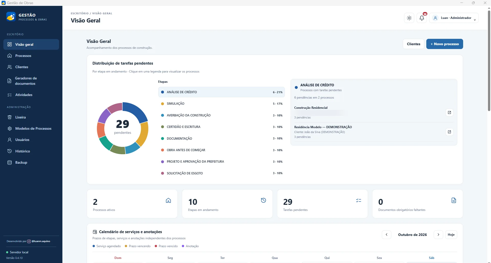

V0.4.10 · EM DESENVOLVIMENTO
SISTEMA LOCAL / ENGENHARIA
Gestão de Obras.
Processos, tarefas e documentos em um só lugar.
Sistema para gerenciamento de processos de construção civil, com etapas configuráveis, acompanhamento de pendências, gestão de documentos e geradores de requerimentos. Utiliza servidor local Node.js e banco de dados SQLite.
JavaScriptNode.jsSQLiteWindows
Explorar as telas Aplicação local · sem demonstração pública